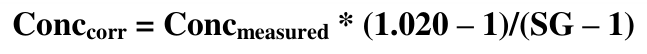

Technical Documents · TD2016IRMS
Edition v1.0, 2016 (version 1.0) · effective 1 January 2016 · superseded
Retrieved on 25 November 2026 from https://www.wada-ama.org/sites/default/files/resources/files/wada-td2016irms-detection_synthetic_forms_eaas_by_irms-en.pdf
Editions: v1.0, 2027 (current) · v1.0, 2022 · v2.0, 2021 · v1.0, 2021 · v1.0, 2019 · v1.0, 2016 · v1.0, 2014
p. 1
Detection of Synthetic Forms of Endogenous Anabolic Androgenic Steroids by GC/C/IRMS
1.0 Introduction
This Technical Document describes the analytical method to detect the presence of synthetic forms of Endogenous Anabolic Androgenic Steroids (EAAS) by Gas Chromatography / Combustion / Isotope Ratio Mass Spectrometry (GC/C/IRMS) in urine Samples.
Consideration is also given to boldenone, boldenone Metabolite(s) and formestane¹ , which may be found naturally in urine Samples at low concentrations.
19-Norandrosterone (19-NA) and 19-noretiocholanolone (19-NE) are considered in a separate Technical Document, TD19NA [1], and the technical recommendations and requirements described herein shall not be applied to their analyses.
1.1 Application of GC/C/IRMS
1.1.1 GC/C/IRMS analysis as a Confirmation Procedure for the exogenous administration of EAAS
GC/C/IRMS analysis shall be conducted as a Confirmation Procedure when the Laboratory receives an "Atypical Passport Finding (ATPF) Confirmation Procedure Request" or a "Suspicious Steroid Profile (SSP) Confirmation Procedure Request" notification through ADAMS, as described in the Technical Document on the Measurement and Reporting of EAAS (TDEAAS) [2].
In addition, even if the Markers of the "steroid profile" are within the normal ranges, the Testing Authority, the Athlete Passport Management Unit (APMU), or WADA may request GC/C/IRMS analysis to be performed on any urine Sample.
¹Formestane (4-hydroxyandrost-4-en-3,17-dione) is an aromatase inhibitor but its structure is similar to EAAS and it may also be found naturally in urine Samples; therefore, it requires an Analytical Testing approach similar to that described in the TDEAAS [2].
p. 2
Furthermore, the Laboratory may at any time advise² the Testing Authority to perform (or not) the GC/C/IRMS analysis based upon its expertise, for example in the presence of any other Marker(s) of administration of EAAS such as 6α-hydroxyandrostenedione, 3α,5-cyclo-5α-androstan-6β-ol-17-one, 6β-hydroxyandrosterone or 6β-hydroxyepiandrosterone (sulfates), or an altered ratio of 7β-hydroxydehydroepiandrosterone to 16αhydroxyandrosterone (sulfates).
1.1.2 GC/C/IRMS analysis for formestane, boldenone or boldenone Metabolite(s)
In Samples containing formestane, boldenone or boldenone Metabolite(s), the GC/C/IRMS analysis for these compounds shall be conducted before reporting an Adverse Analytical Finding when their estimated specific gravity (SG)-adjusted³ concentrations are determined as follows:
- Concentration of formestane between 50 ng/mL and 150 ng/mL.
[Findings for formestane below 50 ng/mL (SG-adjusted³ , if needed) are to be considered as negative, unless the result of the GC/C/IRMS analysis, if performed (depending on Laboratory's analytical capacity and following consultation with the Testing Authority), conclusively establishes the exogenous origin of the substance (Adverse Analytical Finding).
Findings for formestane above 150 ng/mL (SG-adjusted³ ) shall be considered as Adverse Analytical Findings].
- Concentration of boldenone and/or its Metabolite(s) between 5 ng/mL and 30 ng/mL.
[Findings for boldenone and/or its Metabolite(s) at concentrations estimated below 5 ng/mL (SG-adjusted³ , if needed) are to be considered as Atypical Findings, unless the results of the GC/C/IRMS analysis, if performed (depending on Laboratory's analytical capacity and following consultation with
²Or as covered by agreement between the Laboratory and the Testing Authority.
³When the SG of the urine Sample is greater than 1.020, the concentrations are adjusted to a SG of 1.020 based on the following equation (free and hydrolyzed glucuroconjugated steroids).

p. 3
the Testing Authority), conclusively establish the exogenous origin of the substance (Adverse Analytical Finding).
Findings for boldenone and/or its Metabolite(s) above 30 ng/mL should be considered as Adverse Analytical Findings without the need for GC/C/IRMS analysis, unless it is determined that the Sample is substantially degraded due to a high level of microbial contamination (in which case the Sample shall be reported as an Atypical Finding)].
Laboratories that do not have the analytical capacity to perform GC/C/IRMS analysis for formestane, boldenone or its Metabolite(s) shall have the Sample analyzed by another Laboratory that has such analytical capability.
1.1.3 "B" Sample Confirmation Procedure
When an Adverse Analytical Finding is reported for the Marker(s) of the "steroid profile" or for Non-Threshold Substances such as formestane, boldenone or its Metabolite(s) based on the results of a GC/C/IRMS analysis performed on the "A" Sample, only the GC/C/IRMS analysis shall be repeated during the "B" Sample Confirmation Procedure, if applicable.
2.0 GC/C/IRMS analysis
The application of GC/C/IRMS is based on the following:
- The determination of the δ¹³C value of the Target Compound(s) (TCs), i.e. the urinary Metabolite(s) or Marker(s) of the "steroid profile", e.g. androsterone (A), etiocholanolone (Etio), 5α-androstane-3α,17βdiol (5αAdiol), 5β-androstane-3α,17β-diol (5βAdiol), testosterone (T), epitestosterone (E), and/or the Non-Threshold Substance(s), e.g. boldenone, boldenone Metabolite(s), formestane;
- The determination of the δ¹³C value of the Endogenous Reference Compound(s) (ERC), e.g. pregnanediol (PD), 5α-androst-16-en-3α-ol (16-en), 11β-hydroxyandrosterone (11-OH-A), 11-ketoetiocholanolone (11-oxo-Etio); and
- The calculation of the difference in δ¹³C values, i.e. the ∆δ¹³C value, between the ERC(s) and the TC(s).
The GC/C/IRMS analysis shall be conducted on a single Sample Aliquot.
p. 4
2.1 GC/C/IRMS Method Characteristics
Laboratories shall implement the following into the GC/C/IRMS methodology:
- The system shall be calibrated periodically against a steroid Certified Reference Material (CRM) [e.g. CU/USADA-33, CU/USADA-34, or other mixture of certified steroid(s)⁴ ] that is traceable to the assigned values of the recognized international Reference Material (RM). Major revisions of the system (e.g. change of reference gas, cleaning of the ion source) shall require calibration of the system.
- As part of the method validation, the Laboratory shall determine:
- the linearity of the ion source using CO₂ pulses of different peak heights/intensities;
- the linearity of the instrument by the injection of different amounts of RM(s) of underivatized or acetylated, as appropriate, steroid standards (TC(s) and ERC(s)). The instrumental linearity is defined as the range of intensities (expressed in mV or nA, as appropriate) and/or as amounts (ng) of injected steroids that give a consistent δ¹³C value (within 0.5 ‰ of the mean δ¹³C value, determined within 6 to 10 different peak heights/intensities);
- the linearity of the method, i.e. the range of TC and ERC concentrations in urine (ng/mL) producing consistent δ¹³C values within the signal linearity range of the instrument;
- the Limit of Quantification (LOQ) for each TC and ERC as the lowest concentration in urine (ng/mL) which produces a measurable signal in the linear range of the instrument with a standard deviation (SD) < 1.0 ‰, n ≥ 3;
- the estimated combined standard Measurement Uncertainty (uc) for the determination of the δ¹³C values of each TC and ERC. In each case, the uc shall be not greater than 1.0 ‰ (uc_Max).
- the ∆δ¹³C values for each ERC-TC pair (including, at least, A, Etio, 5αAdiol, 5βAdiol and T as TCs and using at least two
⁴The use of a mixture of certified steroids covering the range of δ¹³C values normally found for TCs and ERCs in urine (e.g. -17 ‰ to -34 ‰) is recommended.
p. 5
ERCs, one of which shall be PD) analyzed in volunteer urine samples and/or Athlete negative Samples (a minimum of 20 male and 20 female urine samples), covering the range of steroid concentrations usually found in Doping Control Samples⁵ . The analysis of these negative urine samples shall serve to evaluate method performance by the Laboratory and shall meet the following criteria:
- the mean ∆δ¹³C + 2 SD value for ERC-TC combinations containing A, T or the Adiols as TCs shall be not higher than 3 ‰;
- the mean ∆δ¹³C + 2 SD value for ERC-TC combinations containing Etio or E as TCs shall be not higher than 4 ‰; and
- for each ERC-TC combination, the SD of all ∆δ¹³C values shall not be greater than 1.2 ‰.
- The stability of CO₂ pulses shall be tested before the analysis of each batch of Samples. The linearity of the signal shall be checked regularly, e.g. monthly.
- The urinary TC(s) and ERC(s) once hydrolyzed shall be further purified by High Performance Liquid Chromatography (HPLC) (recommended), Solid Phase Extraction (SPE) or other equivalent purification step prior to the GC/C/IRMS analysis.
- A negative⁶ (QCN) and a positive (QCP) urine quality control sample containing all relevant TC(s) and ERC(s) shall be included in each batch of Samples analyzed and subjected to the same Sample preparation procedure (including hydrolysis of glucuronide conjugates and analyte derivatization, if applicable). The relevant TC(s) shall meet the positivity criteria in the positive QC sample. The consistency of the δ¹³C determinations of the QCN and QCP shall be monitored through the use of QC-charts.
⁵The requirement to have measurements from a minimum of 20 urine reference samples from females does not apply to T and E determinations. However, a minimum total number of 40 reference determinations for T is required.
⁶This does not apply to GC-C-IRMS determinations for formestane, boldenone or boldenone Metabolite(s).
p. 6
- An appropriate RM of the relevant free (unconjugated) steroids, underivatized or acetylated TC(s) and ERC(s), as appropriate, with traceable δ¹³C value(s), shall be injected prior to the analysis of each batch of Samples. It is recommended that this RM is also injected at the end of each sequence (e.g. after 25-30 injections).
- Laboratories shall be capable of performing GC/C/IRMS analyses on A, Etio, T, 5αAdiol and 5βAdiol. When the concentration is sufficient, the TC(s) should be selected/prioritized depending on the variable(s) of the "steroid profile" that prompted the GC/C/IRMS analysis.
- T, 5αAdiol and/or 5βAdiol are the preferred TC(s) to detect the administration of T.
- Laboratories shall perform GC/C/IRMS analyses on E on those Samples in which the concentration of E is abnormally high, i.e. if greater than 200 ng/mL in males or greater than 50 ng/mL in females (SG-adjusted³ ).
- The analysis should be based on the use of PD as the principal ERC. However, another ERC, either 16-en, 11-OH-A or 11-oxo-Etio, should also be routinely used and shall replace PD when the signal is suppressed, affected by poor chromatography or by the administration of a precursor, e.g. pregnenolone. The same ERC shall be used for the determination of all the ∆δ¹³C values.
- No value obtained from any peaks of intensity below or above the range of linearity or in the presence of significant co-eluting peaks shall be considered or reported.
- The steroids may be analyzed underivatized or after acetylation, but only values equivalent to underivatized compounds shall be used to determine the ∆δ¹³C value of the ERC-TC pair. The following mass balance equation for adjustment of the measured δ¹³C values from acetates back to the free form shall be used:
δCs = (ncdδCcd - ndδCdcorr) / ns
where n: number of carbon atoms; s: native steroid (underivatized form); d: derivative group (e.g. acetyl), and cd: derivatized compound.
As δCd is not known, δCdcorr is estimated empirically by consecutive measurements of a non-acetylated and acetylated steroid (e.g. 16-en or 5α-androstanol).
p. 7
2.2 Identification of urinary Metabolites prior to reporting an Adverse Analytical Finding
- A GC-MS analysis is required to ensure the identity of the peaks of the relevant TC(s) and ERC and the absence of significant interference prior to reporting an Adverse Analytical Finding or an Atypical Finding based on GC/C/IRMS results. This is not necessary when the GC/C/IRMS results are negative.
- The same mixtures shall be analyzed by GC-MSⁿ under similar chromatographic conditions. Minor differences in retention times (RT) between the two techniques are expected. The provisions of the Technical Document on Identification Criteria (TDIDCR) shall be followed [3]. In addition, a full scan spectrum shall be obtained over the complete width of the steroid chromatographic peak(s) of interest to document the lack of interference.
2.3 Interpretation of GC/C/IRMS results
The results of the GC/C/IRMS analyses shall be interpreted as follows:
2.3.1 Positive
When ∆δ¹³C value(s) are consistent with the exogenous origin of the TC(s), i.e. if one of the following sets of criteria is fulfilled⁷ (Appendix 1):
i. The ∆δ¹³C value of the ERC-T pair and of one of the ERC-5αAdiol or ERC-5βAdiol pairs are both greater than 3 ‰;
ii. The ∆δ¹³C values of the ERC-5αAdiol and ERC-5βAdiol pairs are both greater than 3 ‰;
iii. The concentration of E is greater than 50 ng/mL in females or greater than 200 ng/mL in males (SG-adjusted) and the ∆δ¹³C value of the ERC-E pair is greater than 4 ‰;
iv. The ∆δ¹³C value of the ERC-A pair is greater than 3 ‰ or the ∆δ¹³C value of the ERC-Etio pair is greater than 4 ‰;
⁷It is not expected that all TCs will be affected to the same extent. Decisions based on the ∆δ¹³C criteria specified in 2.3.1 i) to vii) and Appendix 1 take into account the Measurement Uncertainty associated with the contributing δ¹³C values.
p. 8
v. The ∆δ¹³C value of the ERC-A pair is between 2 ‰ and 3 ‰ or the ∆δ¹³C value of the ERC-Etio pair is between 3 ‰ and 4 ‰, and the ∆δ¹³C value of one of the ERC-5αAdiol or ERC-5βAdiol pairs is greater than 3 ‰;
vi. The ∆δ¹³C value of the ERC-5αAdiol pair is greater than 4 ‰ and the δ¹³C value of 5αAdiol is equal to or less than -27 ‰ (e.g. DHT administration);
vii. The ∆δ¹³C value of either the ERC-formestane, ERC-boldenone or ERC-boldenone Metabolite(s) pairs is greater than 4 ‰.
2.3.2 Negative
When ∆δ¹³C values do not confirm the exogenous origin of the TC(s), i.e. when the ∆δ¹³C values of the ERC-TC pairs do not meet any of the criteria specified in section 2.3.1 above.
2.3.3 Inconclusive
i) When only one of the combined criteria specified in points i), ii), v) or vi) above is met (e.g. the ∆δ¹³C value for the ERC-T pair is greater than 3 ‰ but the ∆δ¹³C values for the ERC-Adiol pairs are both less than 3 ‰).
ii) Due to technical limitations, e.g. when there is insufficient Sample volume or very low concentrations of TC(s) or ERC(s), or in the presence of interfering compounds or any other factor preventing a reliable measurement of the relevant diagnostic Metabolite or ERC-TC pair.
iii) The Laboratory may interpret the results as inconclusive when the criteria for reporting an Adverse Analytical Finding are not met but, in its opinion, are neither consistent with the endogenous origin of the urinary Metabolites (e.g. ERC δ¹³C value at -24.5 ‰ and TC at -27.0 ‰).
p. 9
3.0 Reporting GC/C/IRMS Results
The Laboratory shall report the results of the GC/C/IRMS analyses as follows:
3.1 Adverse Analytical Finding
Samples for which the results of the GC/C/IRMS analysis were positive:
- Each Sample for which an Adverse Analytical Finding is reported shall be reported individually.
- The Test Report shall include:
- A comment indicating that the GC/C/IRMS finding is consistent with the exogenous administration of steroids specifying the identity of the relevant TC(s) that produced a positive GC/C/IRMS finding.
- The δ¹³C value of the relevant TC(s) (which produced a positive GC/C/IRMS finding) and ERC, and each associated uc, expressed in ‰.
- The confirmed values (e.g. concentrations, T/E) of the Marker(s) of the "steroid profile", and the associated uc, expressed in units (see example below; refer to TD EAAS [2])⁸ .
Reporting example for the Test Report:
GC/C/IRMS results are consistent with the exogenous origin of T and 5βAdiol (δ¹³C values: T= -27.5 ‰, uc = 0.9 ‰; 5βAdiol= -25.2 ‰, uc = 0.8 ‰; PD= -20.2 ‰; uc = 0.6 ‰). T = 90 ng/mL, uc = 12 ng/mL; E = 20 ng/mL, uc = 3 ng/mL; T/E = 4.5, uc = 0.5.
Provision of a Second Opinion for GC/C/IRMS
When the results of the GC/C/IRMS analysis indicate an Adverse Analytical Finding for a Sample, the Laboratory should seek the opinion, in writing, of an expert from a second Laboratory before reporting the Adverse Analytical Finding. If obtained, the second opinion shall be recorded in the Laboratory Documentation Package.
⁸When the GC-C-IRMS Confirmation Procedure is applied to formestane, boldenone or boldenone Metabolite(s) only, the Laboratory does not need to perform the quantitative confirmation of these substances or report confirmed values of the Markers of the "steroid profile".
p. 10
3.2 Atypical Finding
Samples for which the results of the GC/C/IRMS analysis were inconclusive:
- Each Sample for which an Atypical Finding is reported shall be reported individually.
- The Test Report shall include:
- A comment indicating that the GC/C/IRMS finding is inconclusive specifying the identity of each relevant TC that produced an inconclusive GC/C/IRMS finding;
- The δ¹³C value of all TC(s) and ERC analyzed and each associated uc, expressed in ‰;
- The confirmed values (e.g. concentrations, T/E) of the abnormal Marker(s) of the "steroid profile", and the associated uc, expressed in units [2] (see example below)⁸ .
Reporting example for the Test Report:
The results of the GC/C/IRMS analyses for T and the Adiols are inconclusive (δ¹³C values: A = -25.3 ‰, uc = 0.6 ‰; Etio = -26.2 ‰, uc = 0.7 ‰; T = -27.6 ‰, uc = 0.9 ‰; 5αAdiol= -26.6 ‰, uc = 0.8 ‰; 5βAdiol= -26.2 ‰, uc = 0.7 ‰; PD= -24.5 ‰; uc = 0.8 ‰). T = 110 ng/mL, uc = 16 ng/mL; E = 10.8 ng/mL, uc = 1.8 ng/mL; T/E = 10.2, uc = 0.8.
3.3 No Prohibited Substance(s) or Metabolite(s) or Marker(s) of a Prohibited Method(s) on the test menu were detected
Samples for which the results of the GC/C/IRMS analysis were negative:
- Each Sample shall be reported individually.
- The Test Report shall include:
- A comment that the GC/C/IRMS results do not indicate an exogenous administration of steroids;
- The δ¹³C value of all TC(s) and ERC analyzed and each associated uc, expressed in ‰;
- The confirmed values (concentrations, T/E) of the abnormal Marker(s) of the "steroid profile" that triggered the GC/C/IRMS analysis, and the associated uc, expressed in units [2] (see example below)⁸ .
p. 11
Reporting example for the Test Report:
GC/C/IRMS results do not confirm the exogenous origin of steroids δ¹³C values: A = -24.3 ‰, uc = 0.7 ‰; Etio = -23.8 ‰, uc = 0.8 ‰; T = -25.9 ‰, uc = 0.8 ‰; 5αAdiol= -25.8 ‰, uc = 0.8; 5βAdiol= -26.0 ‰, uc = 0.9 ‰; PD= -23.5 ‰; uc = 0.6 ‰). T = 43.4 ng/mL, uc = 7.5 ng/mL; E = 7 ng/mL, uc = 1.0 ng/mL; T/E = 6.2, uc = 0.5.
4.0 Interpretation
- The GC/C/IRMS and GC-MSⁿ confirmation methods provide independent and complementary information, but their results must be considered together to arrive at a conclusion that is supported by the scientific literature and knowledge.
- The urinary "steroid profile" may show no major anomaly whilst being excreted following the administration of an EAAS; in such a case, the results of the GC/C/IRMS analysis indicating a synthetic origin of the steroid Metabolites shall prevail.
- Conversely, values for Marker(s) of the "steroid profile" may be outside the subject-based longitudinal reference range while still being of endogenous origin (e.g. heavy ethanol drinking leading to an increased urinary excretion of T and 5βAdiol, microbial formation of free T, or intense, prolonged exercise increasing the excretion of A).
- The "steroid profile" may be altered by the administration of a preparation of a steroid related to testosterone having a relatively enriched δ¹³C value, which therefore may not be detected by GC/C/IRMS. In such cases, the provisions of the Technical Document on Results Management Requirements for the Athlete Biological Passport (TDRMR) shall be followed [4].
p. 12
5.0 References
https://www.wada-ama.org/en/resources/search?f[0]=field_resource_collections%3A30
-
WADA Technical Document TD19NA (current version): Harmonization of Analysis and Reporting of 19-Norsteroids related to Nandrolone.
-
WADA Technical Document TDEAAS (current version): Endogenous Anabolic Androgenous Steroids: Measurement and Reporting.
3*. WADA* Technical Document TDIDCR (current version): Minimum Criteria for Chromatographic-Mass Spectrometric Confirmation of the Identity of Analytes for Doping Control Purposes.
- WADA Technical Document TDRMR (current version): Results Management Requirements for the Athlete Biological Passport. Appendix E to the "Athlete Biological Passport Operating Guidelines".
p. 13
Appendix 1. Interpretation criteria for GC/C/IRMS positive test
| Positive Criteria (Section 2.3) | ∆δ ERC-TC: T | ∆δ ERC-TC: E# | ∆δ ERC-TC: A | ∆δ ERC-TC: Etio | ∆δ ERC-TC: 5αAdiol, 5βAdiol | ∆δ ERC-TC: Formestane, Boldenone, Boldenone Metabolites |
|---|---|---|---|---|---|---|
| i. | > 3 ‰ | > 3 ‰ (either Adiol) | ||||
| ii. | > 3 ‰ (both Adiols) | |||||
| iii. | > 4 ‰ | |||||
| iv. | > 3 ‰ | |||||
| iv. | > 4 ‰ | |||||
| v. | 2-3 ‰ | > 3 ‰ (either Adiol) | ||||
| v. | 3-4 ‰ | > 3 ‰ (either Adiol) | ||||
| vi. | ∆δ(ERC-5α) > 4 ‰ and δ(5α) ≤ -27 ‰ | |||||
| vii. | > 4 ‰ |
Concentration (SG-adjusted³ ) greater than 50 ng/mL in females or greater than 200 ng/mL in males.
Retrieved on 25 November 2026 from https://www.wada-ama.org/sites/default/files/resources/files/wada-td2016irms-detection_synthetic_forms_eaas_by_irms-en.pdf